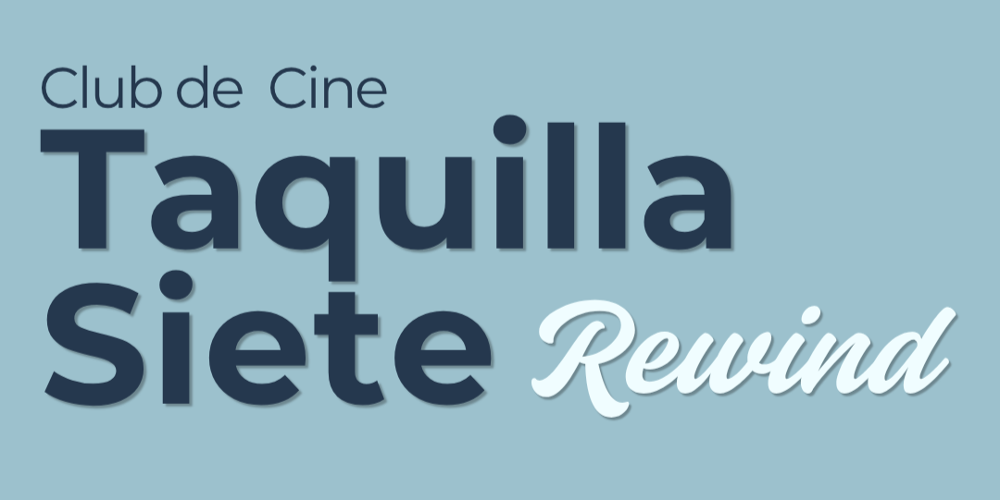
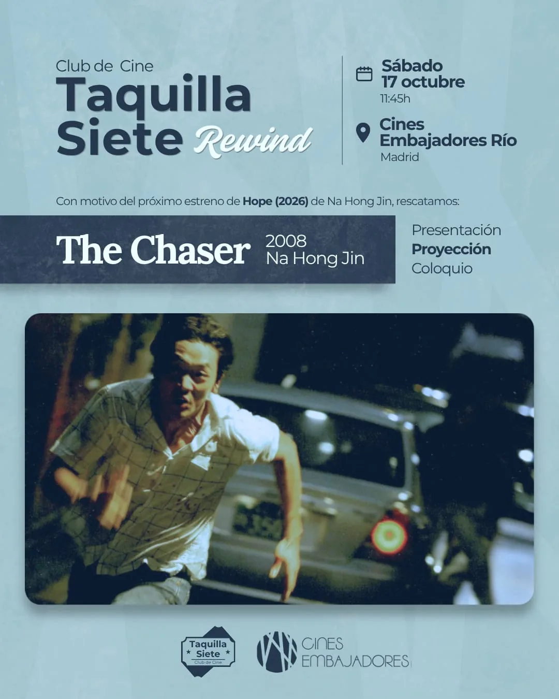

Proyección y coloquio · Con Cines Embajadores, Madrid

Taquilla Siete Rewind son proyecciones de cine en Madrid con presentación y coloquio, pensadas para complementar la cartelera actual.
En cada pase rescatamos una película que sirve de referente o comparte camino con algún estreno del momento: para entender qué se hizo antes, y ver con otros ojos lo que hoy nos puede parecer novedoso.
Es nuestra forma de dar contexto histórico y acercar el cine más clásico a las nuevas generaciones.
Rewind es una actividad en colaboración con Cines Embajadores. Anunciamos cada nueva sesión en Instagram y en el calendario del club.
← Volver a actividadesSábado 17 de octubre, 11:45h — Cines Embajadores Río (Madrid). Con motivo del próximo estreno de Hope (2026), de Na Hong Jin, rescatamos su The Chaser (2008). Presentación, proyección y coloquio.
